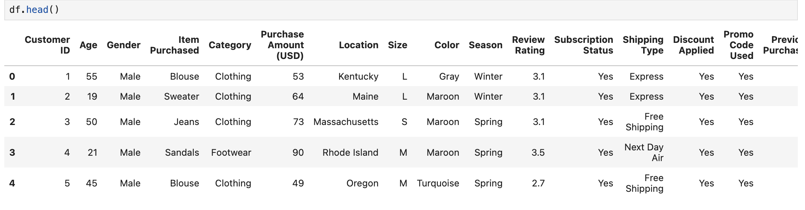
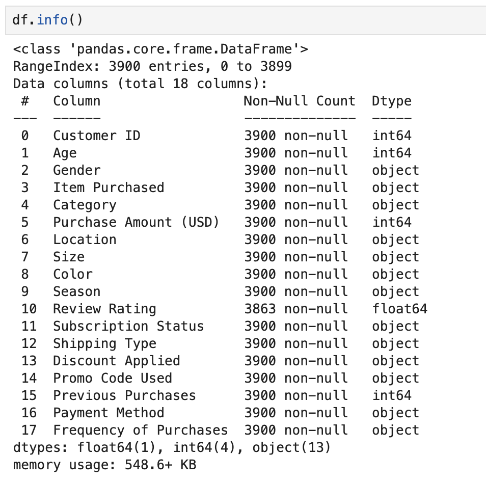
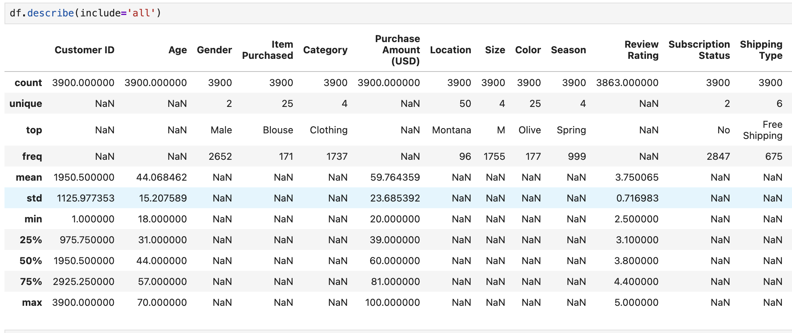
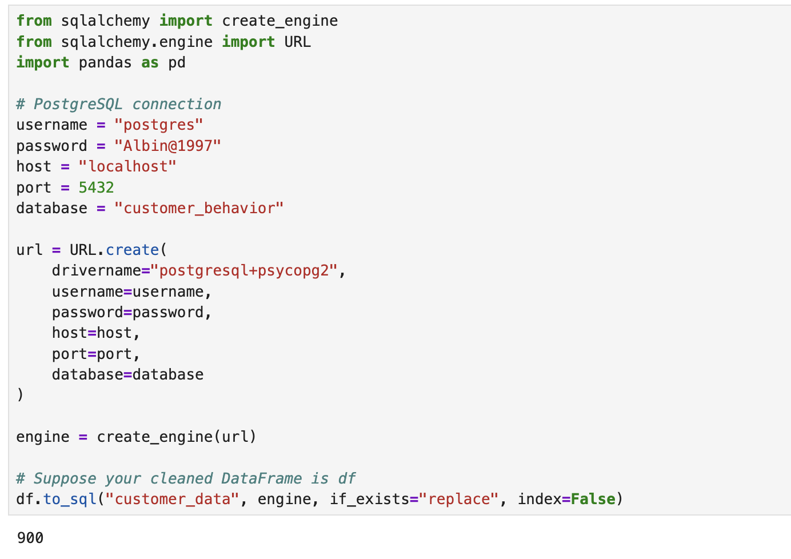
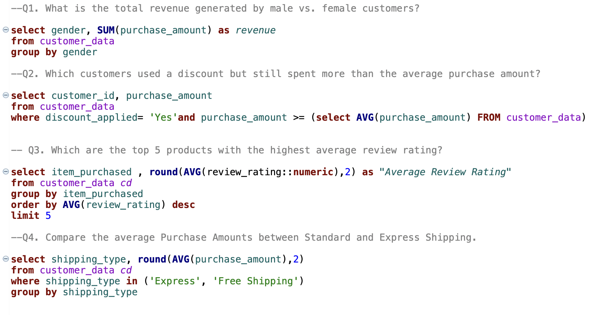
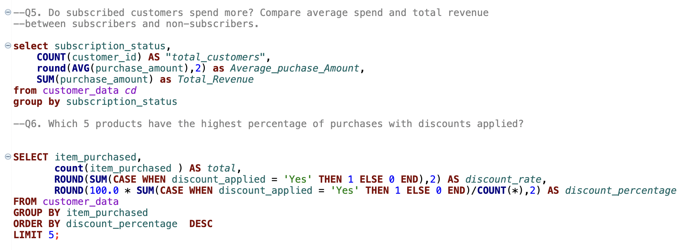
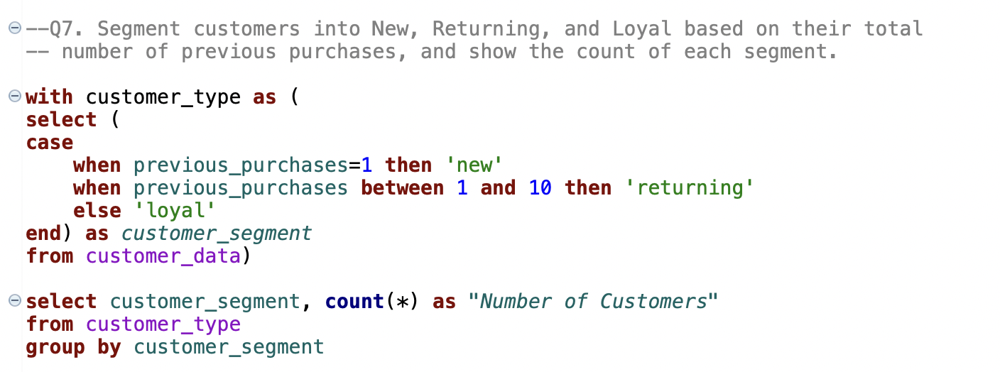
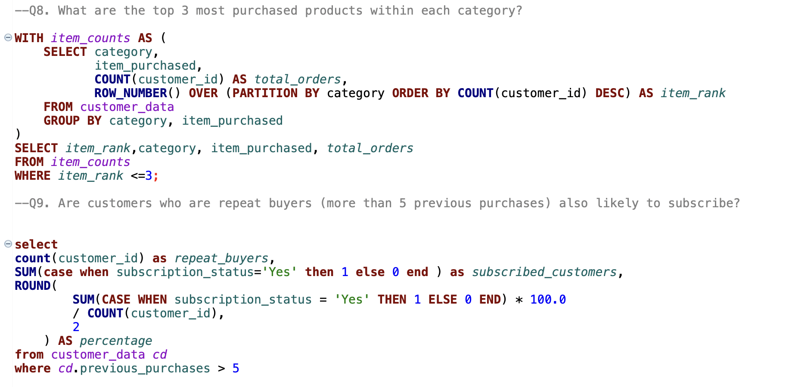
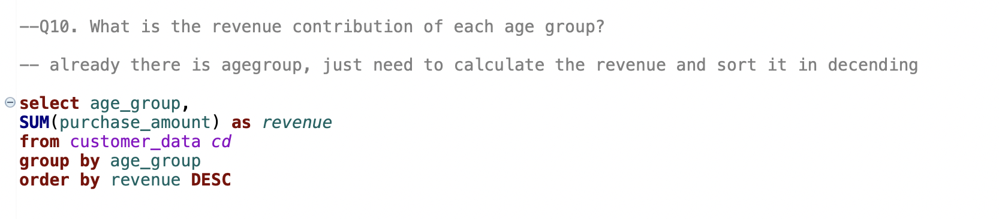
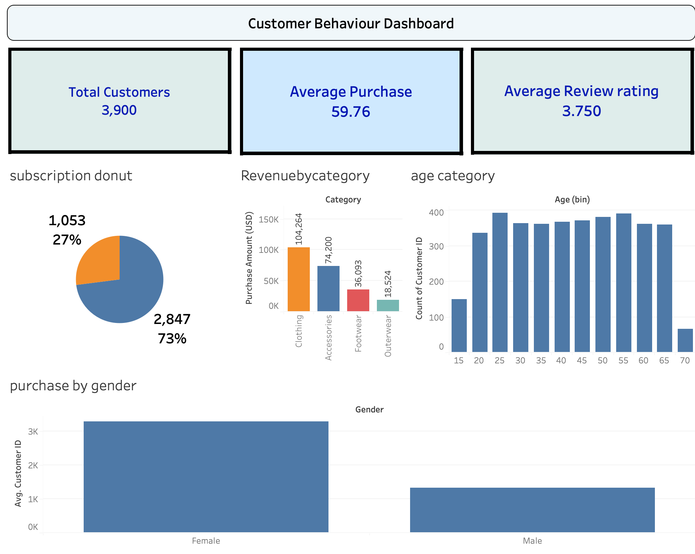

Data Analytics Case Study
The Customer Shopping Behaviour Analysis project explores customer purchasing patterns to identify trends in spending, product category performance, and overall sales behaviour.
The analysis was conducted using SQL for querying transactional data, Python for data cleaning and exploratory analysis, and Tableau for creating interactive dashboards. By combining these tools, raw customer transaction data was transformed into meaningful insights that can support data-driven decision making.
The project focuses on understanding customer purchase frequency, identifying high-performing product categories, and uncovering patterns that influence overall sales performance. The final outcome is a set of data visualizations and dashboards that allow stakeholders to easily explore trends and business insights.
Customer Transactions
Product Categories
SQL Insights Generated









